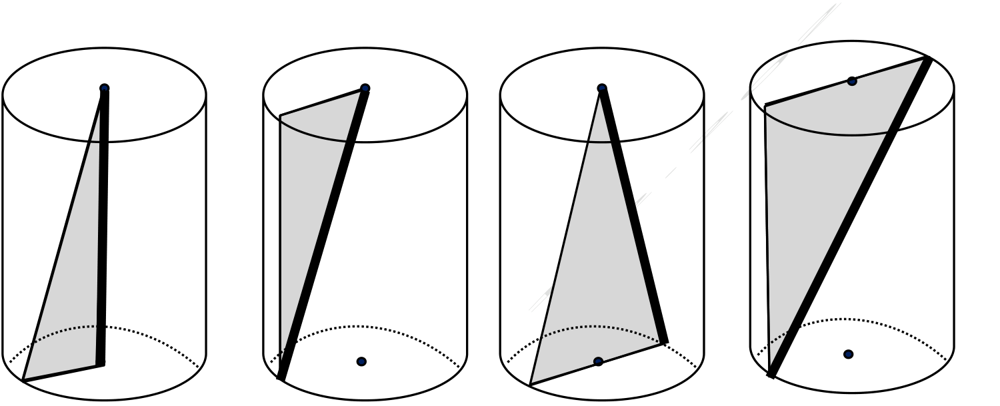

גאומטריה לכיתה ח'
12
4
נתונים 4 גלילים זהים, ובתוך כל אחד משולש שונה.

- א.באיזה מהמשטחים של המשולשים הצלע המובלטת היא הקצרה ביותר, ובאיזה הארוכה ביותר?הקצרה ביותר:הארוכה ביותר:נמקו:
- ב.עבור הגליל r = 4 ס"מ, h = 10 ס"מ — חשבו את נפח הגליל, את שטחי המשולשים ואת אורך הצלע המובלטת בכל משולש.